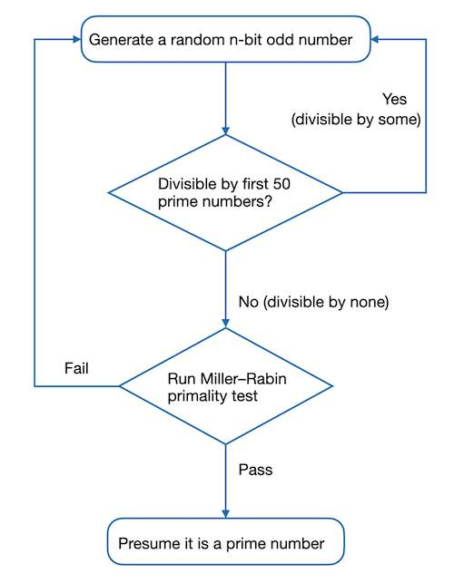

Implement Textbook RSA in Python
RSA encryption algorithm is one of the core technologies of modern public-key cryptography and is widely used on the Internet. As a classical algorithm of public-key cryptography, the programming implementation of textbook RSA can help us quickly grasp its mathematical mechanism and design ideas, and accumulate important experience in the software implementation of cryptography. Here is a detailed example of textbook RSA implementation in Python 3.8 programming environment.
Generating Large Primes
The security of the RSA encryption algorithm is built on the mathematical challenge of factoring the product of two large prime numbers. The first step in constructing the RSA encryption system is to generate two large prime numbers \(p\) and \(q\), and calculate the modulus \(N=pq\). \(N\) is the length of the RSA key, the larger the more secure. Nowadays, practical systems require the key length to be no less than 2048 bits, with corresponding \(p\) and \(q\) about 1024 bits each.
A general effectiveness method for generating such large random prime numbers is a probability-based randomization algorithm, which proceeds as follows:
- Pre-select random numbers of given bit length
- Do a primality test with small prime numbers (Sieve of Eratosthenes)
- If it passes, continue to the third step
- If it fails, return to the first step
- Perform advanced prime test (Miller-Rabin algorithm)
- If it passes, output the presumed prime numbers
- If it fails, return to the first step
In this software implementation, the first step can generate odd numbers directly. Also for demonstration purposes, the second step uses the first 50 prime numbers greater than 2 for the basic primality test. The whole process is shown in the following flowchart.

For the first step, Python function programming requires importing the library function randrange() from the random library. The function uses the input number of bits n in the exponents of 2, which specify the start and end values of randrange(). It also sets the step size to 2 to ensure that only n-bit random odd values are returned.
1 | from random import randrange |
The code for the second step is simple. It defines an array with elements of 50 prime numbers after 2, then uses a double loop in the function to implement the basic primality test. The inner for loop runs the test with the elements of the prime array one by one. It aborts back to the outer loop immediately upon failure, from there it calls the function in the first step to generate the next candidate odd number and test again.
1 | def get_lowlevel_prime(n): |
The Miller-Rabin primality test1 in the third step is a widely used method for testing prime numbers. It uses a probabilistic algorithm to determine whether a given number is a composite or possibly a prime number. Although also based on Fermat's little theorem, the Miller-Rabin primality test is much more efficient than the Fermat primality test. Before showing the Python implementation of the Miller-Rabin prime test, a brief description of how it works is given here.
By Fermat's little theorem, for a prime \(n\), if the integer \(a\) is not a multiple of \(n\), then we have \(a^{n-1}\equiv 1\pmod n\). Therefore if \(n>2\), \(n-1\) is an even number and must be expressed in the form \(2^{s}*d\), where both \(s\) and \(d\) are positive integers and \(d\) is odd. This yields \[a^{2^{s}*d}\equiv 1\pmod n\] If we keep taking the square root of the left side of the above equation and then modulo it, we will always get \(1\) or \(-1\)2. If we get \(1\), it means that the following equation ② holds; if we never get \(1\), then equation ① holds: \[a^{d}\equiv 1{\pmod {n}}{\text{ ①}}\] \[a^{2^{r}d}\equiv -1{\pmod {n}}{\text{ ②}}\] where \(r\) is some integer that lies in the interval \([0, s-1]\). So, if \(n\) is a prime number greater than \(2\), there must be either ① or ② that holds. The conditional statement of this law is also true, i.e.** if we can find a \(\pmb{a}\) such that for any \(\pmb{0\leq r\leq s-1}\) the following two equations are satisfied: \[\pmb{a^{d}\not \equiv 1\pmod n}\] \[\pmb{a^{2^{r}d}\not \equiv -1\pmod n}\] Then \(\pmb{n}\) must not be a prime number**. This is the mathematical concept of the Miller-Rabin primality test. For the number \(n\) to be tested, after calculating the values of \(s\) and \(d\), the base \(a\) is chosen randomly and the above two equations are tested iteratively. If neither holds, \(n\) is a composite number, otherwise, \(n\) may be a prime number. Repeating this process, the probability of \(n\) being a true prime gets larger and larger. Calculations show that after \(k\) rounds of testing, the maximum error rate of the Miller-Rabin primality test does not exceed \(4^{-k}\).
The Miller-Rabin primality test function implemented in Python is as follows, with the variables n,s,d,k in the code corresponding to the above description.
1 | def miller_rabin_primality_check(n, k=20): |
Putting all of the above together, the whole process can be wrapped into the following function, where the input of the function is the number of bits and the output is a presumed random large prime number.
1 | def get_random_prime(num_bits): |
Utility Functions
Greatest Common Divisor (GCD)
gcd(a,b)and Least Common Multiplelcm(a,b):
The RSA encryption algorithm needs to calculate the Carmichael function \(\lambda(N)\) of modulus \(N\), with the formula \(\lambda(pq)= \operatorname{lcm}(p - 1, q - 1)\), where the least common multiple function is used. The relationship between the least common multiple and the greatest common divisor is: \[\operatorname{lcm}(a,b)={\frac{(a\cdot b)}{\gcd(a,b)}}\] There is an efficient Euclidean algorithm for finding the greatest common divisor, which is based on the principle that the greatest common divisor of two integers is equal to the greatest common divisor of the smaller number and the remainder of the division of the two numbers. The specific implementation of Euclid's algorithm can be done iteratively or recursively. The iterative implementation of the maximum convention function is applied here, and the Python code for the two functions is as follows:1
2
3
4
5
6
7
8
9def gcd(a, b):
'''Computes the Great Common Divisor using the Euclid's algorithm'''
while b:
a, b = b, a % b
return a
def lcm(a, b):
"""Computes the Lowest Common Multiple using the GCD method."""
return a // gcd(a, b) * bExtended Euclidean Algorithm
exgcd(a,b)and Modular Multiplicative Inverseinvmod(e,m):
The RSA key pair satisfies the equation \((d⋅e)\bmod \lambda(N)=1\), i.e., the two are mutually modular multiplicative inverses with respect to the modulus \(\lambda(N)\). The extended Euclidean algorithm can be applied to solve the modular multiplicative inverse \(d\) of the public key exponent \(e\) quickly. The principle of the algorithm is that given integers \(a,b\), it is possible to find integers \(x,y\) (one of which is likely to be negative) while finding the greatest common divisor of \(a,b\) such that they satisfy Bézout's identity: \[a⋅x+b⋅y=\gcd(a, b)\] substituted into the parameters \(a=e\) and \(b=m=\lambda(N)\) of the RSA encryption algorithm, and since \(e\) and \(\lambda(N)\) are coprime, we can get: \[e⋅x+m⋅y=1\] the solved \(x\) is the modulo multiplicative inverse \(d\) of \(e\). The Python implementations of these two functions are given below:Similarly, an iterative approach is applied here to implement the extended Euclidean algorithm, with the modular inverse multiplicative function calling the former.1
2
3
4
5
6
7
8
9
10
11
12
13
14
15
16
17
18
19
20
21
22
23
24def exgcd(a, b):
"""Extended Euclidean Algorithm that can give back all gcd, s, t
such that they can make Bézout's identity: gcd(a,b) = a*s + b*t
Return: (gcd, s, t) as tuple"""
old_s, s = 1, 0
old_t, t = 0, 1
while b:
q = a // b
s, old_s = old_s - q * s, s
t, old_t = old_t - q * t, t
a, b = b, a % b
return a, old_s, old_t
def invmod(e, m):
"""Find out the modular multiplicative inverse x of the input integer
e with respect to the modulus m. Return the minimum positive x"""
g, x, y = exgcd(e, m)
assert g == 1
# Now we have e*x + m*y = g = 1, so e*x ≡ 1 (mod m).
# The modular multiplicative inverse of e is x.
if x < 0:
x += m
return x
Implementing RSA Class
Note: Textbook RSA has inherent security vulnerabilities. The reference implementation in the Python language given here is for learning and demonstration purposes only, by no means to be used in actual applications. Otherwise, it may cause serious information security incidents. Keep this in mind!
Based on the object-oriented programming idea, it can be designed to encapsulate the RSA keys and all corresponding operations into a Python class. The decryption and signature generation of the RSA class are each implemented in two ways, regular and fast. The fast method is based on the Chinese Remainder Theorem and Fermat's Little Theorem. The following describes the implementation details of the RSA class.
Object Initialization Method
Initialization method__init__()has the user-defined paramaters with default values shown as below：- Key bit-length (\(N\))：2048
- Public exponent (\(e\))：65537
- Fast decryption or signature generation：False
This method internally calls the
get_random_prime()function to generate two large random prime numbers \(p\) and \(q\) that are about half the bit-length of the key. It then calculates their Carmichael function and verifies that the result and \(e\) are coprime. If not, it repeats the process till found. Thereafter it computes the modulus \(N\) and uses the modular multiplicative inverse functioninvmod()to determine the private exponent \(d\). If a fast decryption or signature generation function is required, three additional values are computed as follows: \[\begin{align} d_P&=d\bmod (p-1)\\ d_Q&=d\bmod (q-1)\\ q_{\text{inv}}&=q^{-1}\pmod {p} \end{align}\]1
2
3
4
5
6
7
8
9
10
11
12
13
14
15
16
17
18
19
20
21
22
23
24
25
26
27RSA_DEFAULT_EXPONENT = 65537
RSA_DEFAULT_MODULUS_LEN = 2048
class RSA:
"""Implements the RSA public key encryption/decryption with default
exponent 65537 and default key size 2048"""
def __init__(self, key_length=RSA_DEFAULT_MODULUS_LEN,
exponent=RSA_DEFAULT_EXPONENT, fast_decrypt=False):
self.e = exponent
self.fast = fast_decrypt
t = 0
p = q = 2
while gcd(self.e, t) != 1:
p = get_random_prime(key_length // 2)
q = get_random_prime(key_length // 2)
t = lcm(p - 1, q - 1)
self.n = p * q
self.d = invmod(self.e, t)
if (fast_decrypt):
self.p, self.q = p, q
self.d_P = self.d % (p - 1)
self.d_Q = self.d % (q - 1)
self.q_Inv = invmod(q, p)Encryption and Decryption Methods
RSA encryption and regular decryption formulas are \[\begin{align} c\equiv m^e\pmod N\\ m\equiv c^d\pmod N \end{align}\] Python built-inpow()function supports modular exponentiation. The above two can be achieved by simply doing the corresponding integer to byte sequence conversions and then calling pow() with the public or private key exponent:For fast descryption, a few extra steps are needed: \[\begin{align} m_1&=c^{d_P}\pmod {p}\tag{1}\label{eq1}\\ m_2&=c^{d_Q}\pmod {q}\tag{2}\label{eq2}\\ h&=q_{\text{inv}}(m_1-m_2)\pmod {p}\tag{3}\label{eq3}\\ m&=m_{2}+hq\pmod {pq}\tag{4}\label{eq4} \end{align}\] In practice, if \(m_1-m_2<0\) in the step \((3)\), \(p\) needs to be added to adjust to a positive number. It can also be seen that the acceleration ratio would theoretically be close to \(4\) because the fast decryption method decreases the modulus and exponent by roughly half the order. Considering the additional computational steps, the actual speedup ratio estimate is subtracted by a correction \(\varepsilon\), noted as \(4-\varepsilon\). The code of the fast decryption function is as follows:1
2
3
4
5
6
7def encrypt(self, binary_data: bytes):
int_data = uint_from_bytes(binary_data)
return pow(int_data, self.e, self.n)
def decrypt(self, encrypted_int_data: int):
int_data = pow(encrypted_int_data, self.d, self.n)
return uint_to_bytes(int_data)1
2
3
4
5
6
7
8
9
10
11
12def decrypt_fast(self, encrypted_int_data: int):
# Use Chinese Remaider Theorem + Fermat's Little Theorem to
# do fast RSA description
assert self.fast == True
m1 = pow(encrypted_int_data, self.d_P, self.p)
m2 = pow(encrypted_int_data, self.d_Q, self.q)
t = m1 - m2
if t < 0:
t += self.p
h = (self.q_Inv * t) % self.p
m = (m2 + h * self.q) % self.n
return uint_to_bytes(m)Signature Generation and Verification Methods
The RSA digital signature generation and verification methods are very similar to encryption and regular decryption functions, except that the public and private exponents are used in reverse. The signature generation uses the private exponent, while the verification method uses the public key exponent. The implementation of fast signature generation is the same as the fast decryption steps, but the input and output data are converted and adjusted accordingly. The specific implementations are presented below：1
2
3
4
5
6
7
8
9
10
11
12
13
14
15
16
17
18
19
20
21
22
23
24def generate_signature(self, encoded_msg_digest: bytes):
"""Use RSA private key to generate Digital Signature for given
encoded message digest"""
int_data = uint_from_bytes(encoded_msg_digest)
return pow(int_data, self.d, self.n)
def generate_signature_fast(self, encoded_msg_digest: bytes):
# Use Chinese Remaider Theorem + Fermat's Little Theorem to
# do fast RSA signature generation
assert self.fast == True
int_data = uint_from_bytes(encoded_msg_digest)
s1 = pow(int_data, self.d_P, self.p)
s2 = pow(int_data, self.d_Q, self.q)
t = s1 - s2
if t < 0:
t += self.p
h = (self.q_Inv * t) % self.p
s = (s2 + h * self.q) % self.n
return s
def verify_signature(self, digital_signature: int):
"""Use RSA public key to decrypt given Digital Signature"""
int_data = pow(digital_signature, self.e, self.n)
return uint_to_bytes(int_data)
Functional Tests
Once the RSA class is completed, it is ready for testing. To test the basic encryption and decryption functions, first initialize an RSA object with the following parameters
- Key length (modulo \(N\)): 512 bits
- Public exponent (\(e\)): 3
- Fast decryption or signature generation: True
Next, we can call the encryption method encrypt() of the RSA object instance to encrypt the input message, and then feed the ciphertext to the decryption method decrypt() and the fast decryption method decrypt_fast() respectively. We use the assert statement to compare the result with the original message. The code snippet is as follows.
1 | # ---- Test RSA class ---- |
Likewise, we can also test the signature methods. In this case, we need to add the following import statement to the beginning of the file
1 | from hashlib import sha1 |
This allows us to generate the message digest with the library function sha1() and then call the generate_signature() and generate_signature_fast() methods of the RSA object instance to generate the signature, respectively. Both signatures are fed to the verify_signature()` function and the result should be consistent with the original message digest. This test code is shown below.
1 | mdg = sha1(msg).digest() |
If no AssertionError is seen, we would get the following output, indicating that both the encryption and signature tests passed.
1 | RSA message encryption/decryption test passes! |
Performance Tests
Once the functional tests are passed, it is time to see how the performance of fast decryption is. We are interested in what speedup ratio we can achieve, which requires timing the execution of the code. For time measurements in Python programming, we have to import the functions urandom() and timeit() from the Python built-in libraries os and timeit, respectively:
1 | from os import urandom |
urandom() is for generaring random bype sequence, while timeit() can time the execution of a given code segment. For the sake of convenience, the RSA decryption methods to be timed are first packed into two functions:
decrypt_norm()- Regular decryption methoddecrypt_fast()- Fast descryption method
Both use the assert statement to check the result, as shown in the code below:
1 | def decrypt_norm(tester, ctxt: bytes, msg: bytes): |
The time code sets up two nested for loops:
The outer loop iterates over different key lengths
klen, from 512 bits to 4096 bits in 5 levels, and the corresponding RSA objectobjis initialized with:- Key length (modular \(N\)):
klen - Public exponent (\(e\)): 65537
- Fast decryption or signature generation: True
The variable
rptis also set in the outer loop to be the square root of the key length, and the timing variablest_nandt_fare cleared to zeros.- Key length (modular \(N\)):
The inner layer also loops 5 times, each time executing the following operations:
- Call
urandom()to generate a random sequence of bytesmgwith bits half the length of the key - Call
obj.encrypt()to generate the ciphertextct - call
timeit()and enter the packing functionsdecrypt_norm()anddecrypt_fast()with the decryption-related parametersobj,ctandmg, respectively, and set the number of executions torpt - The return values of the
timeit()function are stored cumulatively int_nandt_f
- Call
At the end of each inner loop, the current key length, the mean value of the timing statistics, and the calculated speedup ratio t_n/t_f are printed. The actual program segment is printed below:
1 | print("Start RSA fast decryption profiling...") |
Here are the results on a Macbook Pro laptop:
1 | Start RSA fast decryption profiling... |
The test results confirm the effectiveness of the fast decryption method. As the key length increases, the computational intensity gradually increases and the running timeshare of the core decryption operation becomes more prominent, so the speedup ratio grows correspondingly. However, the final speedup ratio tends to a stable value of about 3.5, which is consistent with the upper bound of the theoretical estimate (\(4-\varepsilon\)).
The Python code implementation of the textbook RSA helps reinforce the basic number theory knowledge we have learned and also benefits us with an in-depth understanding of the RSA encryption algorithm. On this basis, we can also extend to experiment some RSA elementary attack and defense techniques to further master this key technology of public-key cryptography. For the complete program click here to download: textbook-rsa.py.gz
Gary Lee Miller, a professor of computer science at Carnegie Mellon University, first proposed a deterministic algorithm based on the unproven generalized Riemann hypothesis. Later Professor Michael O. Rabin of the Hebrew University of Jerusalem, Israel, modified it to obtain an unconditional probabilistic algorithm.↩︎
This is because it follows from \(x^2\equiv 1\pmod n\) that \((x-1)(x+1)=x^{2}-1\equiv 0\pmod n\). Since \(n\) is a prime number, by Euclid's Lemma, it must divide either \(x- 1\) or \(x+1\), so \(x\bmod n\) must be \(1\) or \(-1\).↩︎